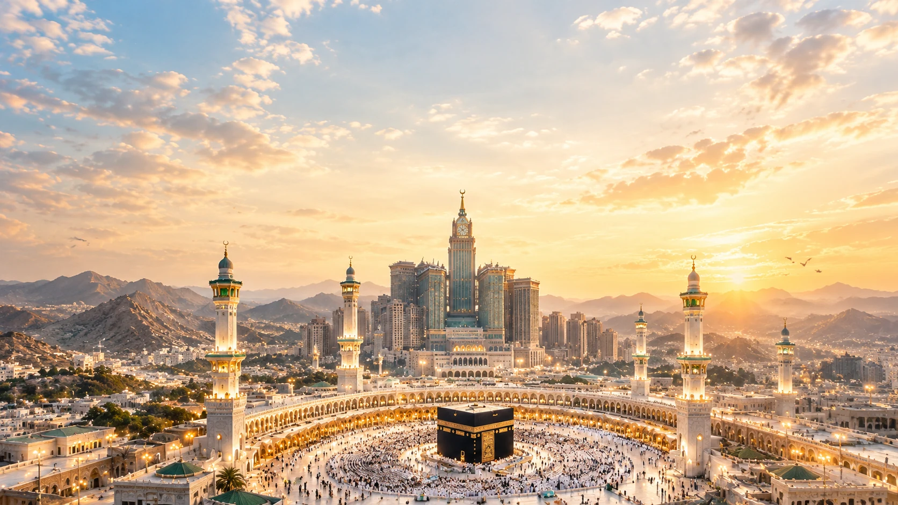

হোটেলের অবস্থান
মসজিদুল হারাম বা মসজিদে নববী থেকে দূরত্ব কীভাবে মাপা হয়েছে—হাঁটার পথ, প্রবেশপথ ও পরিবহনসহ জেনে নিন।
TWO HOLY CITIES · ONE MEANINGFUL JOURNEY
দুই শহরের অবস্থান, যাতায়াত ও সফর-পরিকল্পনা সম্পর্কে প্রয়োজনীয় বিষয়গুলো আগে থেকে জেনে নিন।
TWO CITIES · ONE MEANINGFUL JOURNEY
মক্কার ইবাদতের আবহ থেকে মদিনার প্রশান্তি—সফরের প্রতিটি অধ্যায়ের জন্য আগে থেকেই জেনে নিন প্রয়োজনীয় বিষয়গুলো।

01 — THE FIRST STOPইবাদত, প্রস্তুতি ও পবিত্রতার পথে
DISCOVER MAKKAH ↗ 02 — THE QUIET MOMENT
02 — THE QUIET MOMENT
প্রশান্তি, দরুদ ও ভালোবাসার শহর
DISCOVER MADINAH ↗PLAN WITH THE RIGHT INFORMATION
শহর, হোটেল ও যাতায়াতের পরিকল্পনা প্যাকেজভেদে বদলাতে পারে। বুকিংয়ের আগে লিখিত itinerary ও অবস্থানের তথ্য সংগ্রহ করুন।
মসজিদুল হারাম বা মসজিদে নববী থেকে দূরত্ব কীভাবে মাপা হয়েছে—হাঁটার পথ, প্রবেশপথ ও পরিবহনসহ জেনে নিন।
মক্কা–মদিনা যাত্রার মাধ্যম, ব্যাগেজ সীমা, যাত্রার সময় ও পিকআপ পয়েন্ট লিখিতভাবে নিশ্চিত করুন।
অনুমতি, সময়সূচি ও প্রযোজ্য নির্দেশনা পরিবর্তন হতে পারে। যাত্রার আগে অফিসিয়াল প্ল্যাটফর্মে সর্বশেষ তথ্য দেখুন।
OFFICIAL INFORMATION
নিবন্ধন, অনুমতি ও নিয়মের ক্ষেত্রে তৃতীয় পক্ষের পোস্টের বদলে সংশ্লিষ্ট সরকারি উৎসকে অগ্রাধিকার দিন।